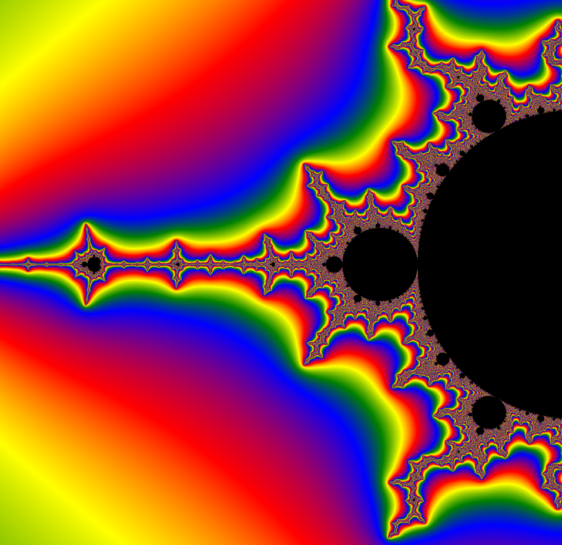
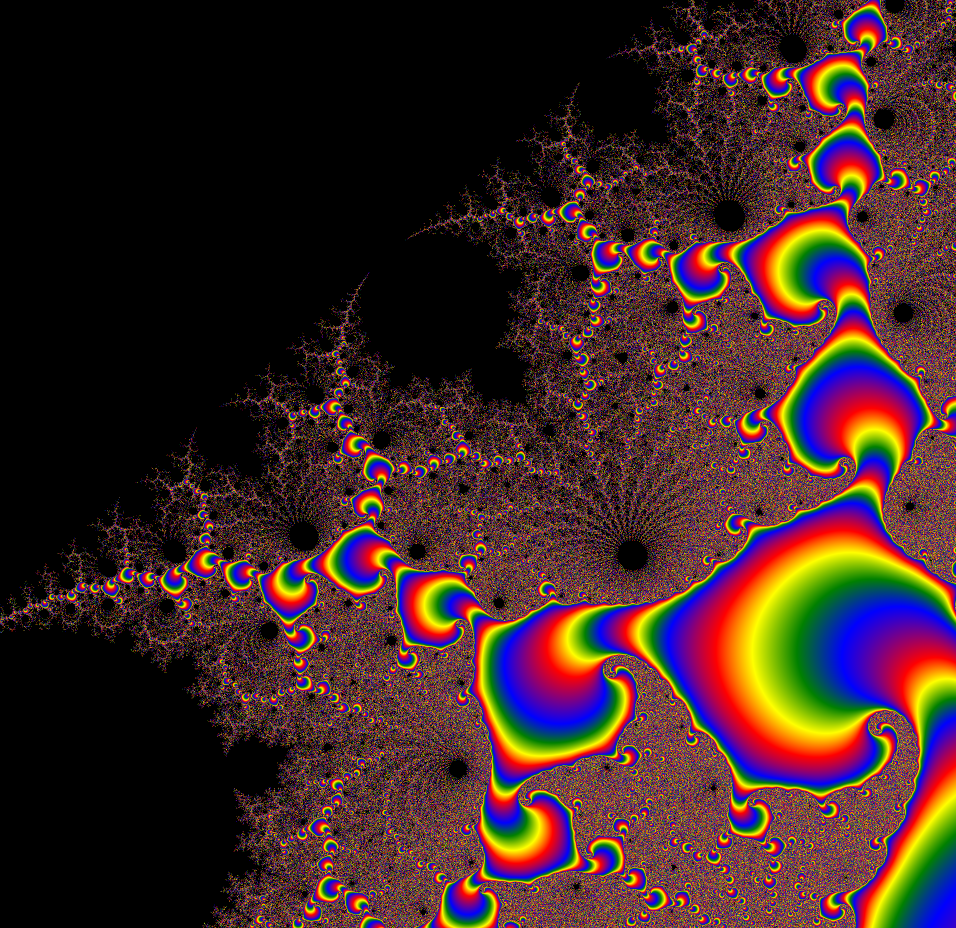
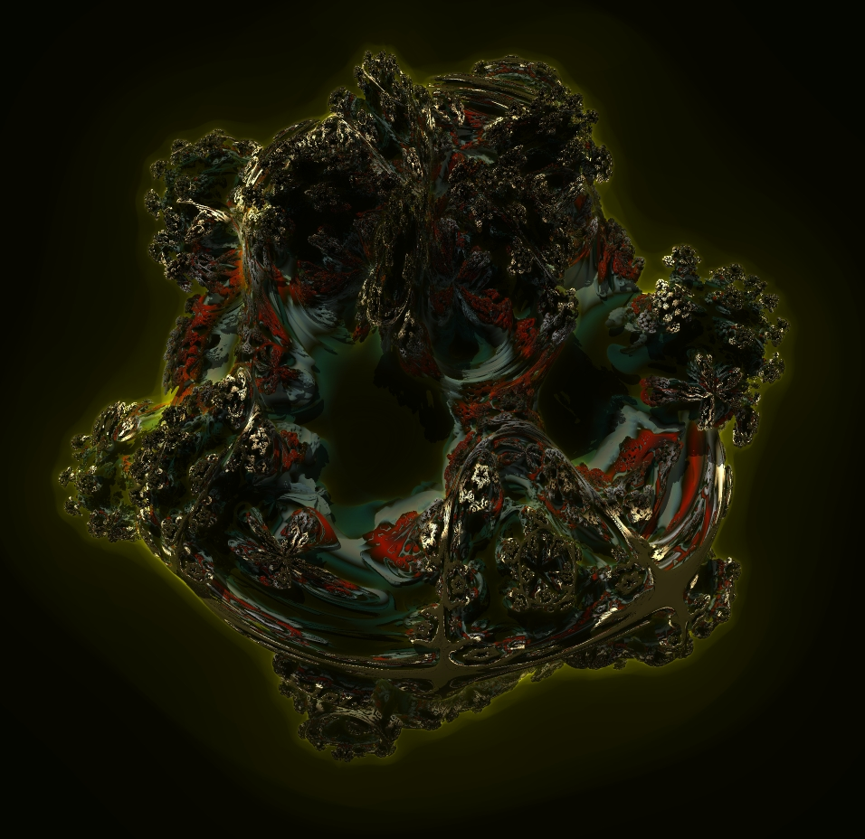

The Mandelbrot Set is a mathematical equation that is plotted by how quickly goes to infinity. The black space means that the starting coordinates do not reach infinity. The Mandelbrot Set is one of mathematics' most well known fractal and produces many beautiful images. The equation used to model this is:
The Mandelbrot set is self repeating meaning that you will find smaller virsions of the main "bulb" scattered in its many branches. Example below:
The further you zoom into the fractal, the more complex the image becomes. Example below:
The mandelbrot set can also be rendered in a similar way in 3d as it is rendered in 2d. Changing the variables a bit allows for some crazy looking images. Example below:
All images generated were done so on Alexander Smith's personal computer via a rendering software called visions of chaos